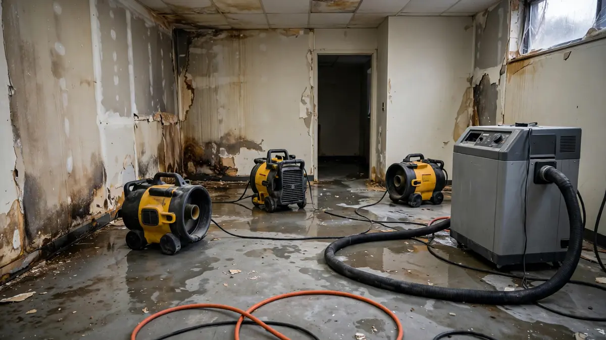

Education · Oct 8, 2026 · 8 min read
Why Structural Drying Matters More Than Just Removing Water
Most people think water damage restoration is about removing water. It is not — or rather, removing the water is only the first act. The job that determines whether your home actually recovers is the one that happens after the puddles are gone. So what is structural drying? It is the deliberate, measured process of pulling trapped moisture out of the building itself — the framing, subfloor, drywall, and concrete — using equipment placed according to moisture readings, and continuing until instruments confirm the materials are dry. Not until they look dry. Until they are dry.

That distinction sounds subtle. It is the difference between a home that recovers and a home that grows mold inside its walls six weeks later.
Removing Water vs. Drying the Structure
Extraction handles the obvious: standing water on floors, soaked carpet, water pooled in low spots. Pumps and extractors are fast and satisfying — the room visibly transforms in an hour. But building materials are sponges wearing a hard hat. Drywall wicks water upward from the floor line. Wood framing absorbs it deep into the grain. Concrete slabs hold it for weeks. None of that comes out with an extractor.
Structural drying addresses everything extraction cannot reach. It is a slower, quieter phase — days, not hours — and it is where the technical skill actually lives. Anyone can rent a pump. Knowing where moisture hides, how much is there, and when it is truly gone is the professional discipline.
How Professionals Know When Something Is Dry
Here is the uncomfortable truth about drying: human senses are useless at it. Wood that feels dry to the touch can still hold enough moisture to feed mold. Drywall that looks fine can be wet on its back face. Paint hides everything. This is why moisture mapping comes before and during drying — pin meters and pinless meters take actual readings inside materials, thermal imaging finds cold (damp) spots behind surfaces, and those readings get logged daily.
The readings are compared against a dry standard — typically an unaffected area of the same material in the same building. Drying continues until the wet materials return to that baseline. "Dry to a number, not a feeling" is how the good technicians put it. If someone tells you the job is done but cannot show you the readings, the job is not done.
The Equipment, and Why Placement Matters
Structural drying runs on two workhorses: air movers and dehumidifiers. Air movers do not "blow things dry" the way a hair dryer works — they break up the thin layer of saturated air clinging to wet surfaces so evaporation can continue. Dehumidifiers then pull that evaporated moisture out of the air so it does not simply re-condense elsewhere in the house. The two work as a system, and the ratio and placement are calculated, not guessed.
Placement is where experience shows. An air mover pointed at the middle of a room does almost nothing; the same unit directed along a wet wall, lifting the boundary layer across the damp surface, does the actual work. Dehumidifiers need to sit where the moist air collects. Containment — sealing off the drying area with plastic sheeting — keeps the equipment working on the wet space instead of dehumidifying your entire house. Every one of these decisions traces back to the moisture map.
What Happens When Drying Gets Skipped
Skipping or shortcutting structural drying is the most expensive mistake in water damage, because the bill arrives months later. Trapped moisture feeds mold inside wall cavities — the kind you smell before you see. It swells wood framing and subfloors, cups hardwood, delaminates engineered flooring, corrodes fasteners, and wicks into materials far from the original leak. By the time the symptoms surface, the fix is no longer "drying" — it is demolition and rebuild.
The cruelest version: the homeowner who did everything right in week one — fast extraction, fans from the hardware store, everything "looked dry" — and finds mold behind the baseboards in week eight. Household fans move air; they do not dehumidify, they do not reach inside walls, and nobody took a single moisture reading. Looking dry and being dry are different states of matter.
How Long Does Structural Drying Take?
The honest answer is that it depends — on the materials involved, how much water they absorbed, temperature, humidity, and how quickly drying started. A clean-water spill on tile over concrete dries far faster than the same spill wicked into hardwood over a plywood subfloor. What matters is not a calendar estimate but the process: daily readings, adjusted equipment, and a documented finish line. Be wary of anyone who quotes you a drying timeline before taking a single moisture reading — they are guessing.
If mold has already established itself during the wet period, drying alone is not the whole answer anymore. That is when mold remediation enters the picture — but note the order: dry first, remediate second. Remediation on wet materials is wasted effort.
What Proper Structural Drying Looks Like From Your Side
If you are living through a drying job, here is what competent work looks like: technicians arrive with meters before they arrive with equipment. They show you readings and explain what "dry" means for your materials. Equipment is placed deliberately, not scattered. Someone returns to check readings and adjust. At the end, you get documentation — the readings that prove the structure is dry. That paperwork matters for insurance, for resale disclosure, and for your own peace of mind.
For the full picture of how this phase fits into a complete response, see our structural drying service overview — and if you are dealing with an active loss right now, the drying clock is already running.
Frequently Asked Questions
What is structural drying, exactly?
It is the process of removing trapped moisture from building materials — framing, drywall, subflooring, concrete — using air movers and dehumidifiers placed according to moisture-meter readings, continued until instruments confirm the materials have returned to dry standards.
How is structural drying different from water extraction?
Extraction removes standing, visible water quickly. Structural drying removes the invisible moisture absorbed into materials, which takes days and requires measurement. Extraction without drying leaves the building wet; drying without extraction wastes time on water that could have been pumped.
Can I dry out water damage myself with fans?
Household fans help surface evaporation but cannot dehumidify, cannot reach inside walls, and give you no way to verify dryness. For anything beyond a tiny, clean spill caught immediately, professional drying with moisture verification is the safer bet.
Why does drying take several days?
Because bound moisture inside wood, drywall, and concrete releases slowly. Rushing it — with excessive heat, for example — can damage materials (cracking wood, bubbling finishes) without actually speeding the release. Controlled, measured drying is faster in the only sense that matters: it finishes.
How do I know the drying is actually complete?
Moisture readings compared against dry standards for the same materials. Ask to see the readings — start, daily progress, and final. Documentation is the difference between "we think it's dry" and "we know it's dry."